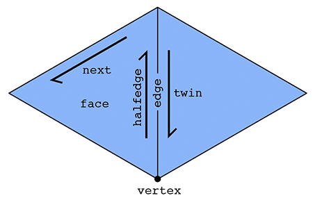
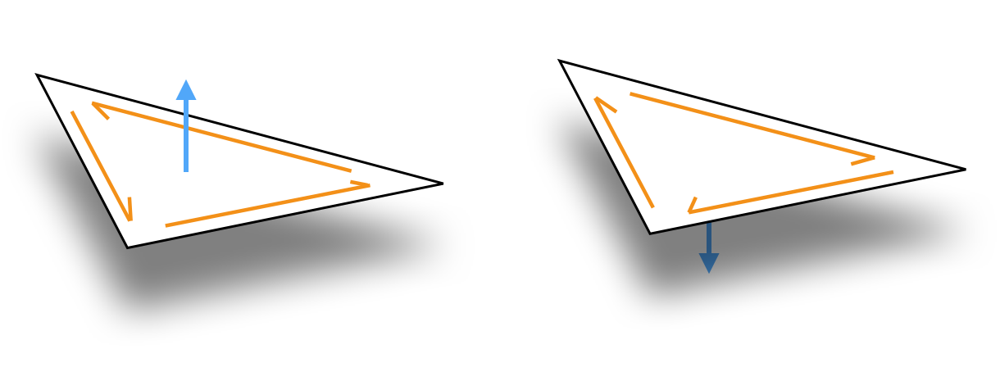

Basics
The SurfaceMesh is the workhorse data structure for representing surface in geometry-central. Internally, it is reference-based mesh (similar to halfedge mesh), and can hold general polygonal meshes (though many routines only support triangle meshes). SurfaceMesh offers wide support for things like iterating around a mesh, modifying a mesh, and associating data with a mesh via containers. Under the hood, it is implemented with dense, automatically resizing buffers for efficient performance.
#include "geometrycentral/surface/surface_mesh.h"
#include "geometrycentral/surface/manifold_surface_mesh.h"
Old HalfedgeMesh type
In a previous version of geometrycentral, the mesh type was simply called HalfedgeMesh, and only supported manifold meshes. This type as been renamed to ManifoldSurfaceMesh.
Including geometrycentral/surface/halfedge_mesh.h will simply typedef HalfedgeMesh as ManifoldSurfaceMesh, so most existing code will still work unchanged; new code should use ManifoldSurfaceMesh.
General vs. Manifold Surface Meshes
There are variants of the surface mesh class; the more general SurfaceMesh which can hold any very general polygonal mesh, and the more specific ManifoldSurfaceMesh, which only supports manifold, oriented meshes.
Beyond the general capabilities of a SurfaceMesh, the ManifoldSurfaceMesh:
- inherits from
SurfaceMesh, and can be used anywhere aSurfaceMeshis expected - supports additional operations which require a manifold structure
- internally uses a more efficient representation
There are also a small number of operations which might throw an error if called on a ManifoldSurfaceMesh, and should be used only on the more general SurfaceMesh. In particular, mutations which would make the mesh nonmanifold.
Nonmanifold Meshes
Support for general, possibly nonmanifold surface meshes is a recent addition to geometry-central. We are still gradually porting routines from supporting ManifoldSurfaceMesh to the more general SurfaceMesh where appropriate!
Element types
The SurfaceMesh also comes with a collection of lightweight types serving as logical references, or “handles” to mesh elements: Vertex, Halfedge, Edge, Corner, Face, and BoundaryLoop (ManifoldSurfaceMesh only). These handles are essentially just a typed wrapper around an ID for the element. Deleting one of these handles does not delete the underlying element, and one may have many distinct handles to the same element Vertex a; Vertex b; a == b;.
Mesh connectivity
Generally, you can (and should) interact with the mesh via higher-level, abstracted routines. However, this section details the low-level relationships between these handles. Note that on a ManifoldSurfaceMesh, the guarantees about these relationships are much stronger than on a more general SurfaceMesh.
The primary type in our halfedge-based mesh is a halfedge, in addition to the usual vertex, edge and face types. A halfedge is a directed edge incident on a face, as shown below.
On a ManifoldSurfaceMesh, two halfedges, oriented in opposite directions, make up each edge in the mesh. Each halfedge has relationships with five adjacent elements:
Halfedge::twin()the other halfedge across the incident edgeHalfedge::next()the next halfedge in clockwise order around the incident faceHalfedge::vertex()the vertex at the tail (back) of the halfedgeHalfedge::edge()the incident edgeHalfedge::face()the incident face

On a more general SurfaceMesh, rather than a single twin, the Halfedge::sibling() referene orbits around all other halfedge incident on the edge, which might point in the same or the opposite direction.
Each vertex, edge, and face need just one relationship:
Vertex::halfedge()any of the incident halfedges (which point outward from the vertex)Edge::halfedge()any of the incident halfedgesFace::halfedge()any of the incident halfedges
In fact, these relationships is sufficient to implement pretty much any local traversal. Geometry central provides a wide range of convience iterators which wrap these relationships to traverse neighborhoods (see navigation).
for(Edge e : vertex.adjacentEdges()) {
// do science
}
Manifold, Oriented Surfaces
The ManifoldSurfaceMesh mesh imposes two requirements: manifoldness and orientation.
Manifoldness means that our surface must locally look like a plane in any neighborhood. This disallows structures such as three faces meeting at an edge, or two cones of faces meeting at a single vertex like an hourglass.
Furthermore the halfedge mesh implies a combinatorial orientation of the surface, indicated by the clockwise ordering of halfedges around each face (see figure below). Because the halfedge mesh implies an orientation, it cannot represent non-orientable surfaces, like a Klein bottle.

These properties are invariants which always hold for the ManifoldSurfaceMesh; in practice we check them during construction and ensure that all operations preserve them.
Basic API
Constructors
See the mesh I/O page for helpers which read a mesh from file, and factory methods to construct a mesh and geometry simultaneously.
SurfaceMesh(const std::vector<std::vector<size_t>>& polygons)
Constructs a mesh from a face-index list.
polygonsa list of faces, each holding the indices of the vertices incident on that face, zero-indexed and in counter-clockwise order.
ManifoldSurfaceMesh(const std::vector<std::vector<size_t>>& polygons)
Same as above, but constructs a manifold surface mesh.
SurfaceMesh(const Eigen::MatrixBase<T>& faces)
Constructs a mesh from a rectangular face-index matrix, like an Fx3 array of triangle indices, or an Fx4 array of quad indices. The matrix scalar can be any integer type, like size_t or int.
The Eigen:MatrixBase<T> type is just a general type which accepts most Eigen matrix types as input, including geometry-central’s nicely-named wrapper DenseMatrix<T>.
ManifoldSurfaceMesh(const Eigen::MatrixBase<T>& faces)
Same as above, but constructs a manifold surface mesh.
ManifoldSurfaceMesh(const std::vector<std::vector<size_t>>& polygons, const std::vector<std::vector<std::tuple<size_t, size_t>>>& twins)
Constructs a mesh from a face-index list, and extra data specifying the neighboring face across each face-side. This extra data allows you to describe meshes where there are multiple, distinct edges between some pair of vertices
-
polygonsa list of faces, each holding the indices of the vertices incident on that face, zero-indexed and in counter-clockwise order. -
twinsa list of tuples, in correspondence with thepolygonslist. For each side of a face, it holds an(iF, iS)tuple, whereiFis the index of the face across the edge, andiSis the side of that face (e.g. theiS = 2for the third side of a triangle). Set both tuple elements toINVALID_INDfor boundary sides.
Element counts
Remember, all functions from SurfaceMesh can also be called on ManifoldSurfaceMesh.
size_t SurfaceMesh::nVertices()
Returns the number of vertices.
size_t SurfaceMesh::nInteriorVertices()
Returns the number of vertices not incident on the boundary.
size_t SurfaceMesh::nBoundaryVertices()
Returns the number of vertices incident on the boundary.
size_t SurfaceMesh::nEdges()
Returns the number of edges.
size_t SurfaceMesh::nFaces()
Returns the number of faces in the mesh.
size_t SurfaceMesh::nHalfedges()
Returns the number of halfedges, including both interior halfedges and any exterior halfedges incident on boundary loops. Always exactly twice the number of edges.
size_t SurfaceMesh::nInterioHalfedges()
Returns the number of interior halfedges, which are incident on faces of the mesh. Always equal to the sum of the number of sides of all faces.
size_t SurfaceMesh::nExteriorHalfedges()
Returns the number of exterior halfedges, which are opposite boundary faces.
size_t SurfaceMesh::nBoundaryLoops()
Returns the number of distinct boundary loops in the mesh, each identified as an fictional face closing a boundary loop in the mesh.
Properties
bool SurfaceMesh::hasBoundary()
Returns true if the mesh has boundary, that is if it is not closed.
Complexity \mathcal{O}(1).
int ManifoldSurfaceMesh::eulerCharacteristic()
Returns the Euler characteristic of the surface. Computed in O(1) from element counts.
Note: always computed by naively applying Euler’s polyhedron formula, which might not do what you want in the case of multiple-connected components.
int ManifoldSurfaceMesh::genus()
Returns the genus of the surface. Computed in O(1) from element counts.
Note: always computed by naively applying Euler’s polyhedron formula, which might not do what you want in the case of multiple connected components.
bool SurfaceMesh::isManifold()
Returns true if the mesh is both edge- and vertex- manifold.
Note that there is no isVertexManifold(), because a mesh which is edge-nonmanifold is always also vertex-nonmanifold.
bool SurfaceMesh::isEdgeManifold()
Returns true if the mesh is edge-manifold.
bool SurfaceMesh::isOriented()
Returns true if all faces have consistent orientations.
bool SurfaceMesh::isTriangular()
Returns true if all faces in the mesh have 3 sides.
Complexity \mathcal{O}(n), do not call in a tight loop.
size_t SurfaceMesh::nConnectedComponents()
Returns the number of distinct connected components of the mesh.
Complexity \mathcal{O}(n), do not call in a tight loop.
Utility functions
std::vector<std::vector<size_t>> SurfaceMesh::getFaceVertexList()
Return a listing of the vertex indices incident on each face.
DenseMatrix<T> SurfaceMesh::getFaceVertexMatrix()
Return a dense F x D matrix of the vertex indices for each face in the mesh. All faces in the mesh must have the same degree D.
This function is templated on the scalar type for the resulting matrix, so call it like
DenseMatrix<size_t> F = mesh->getFaceVertexMatrix<size_t>();
size_t, or like
DenseMatrix<int> F = mesh->getFaceVertexMatrix<int>();
int.
Remember that DenseMatrix<T> is just our nice synonym for Eigen:::Matrix.
std::unique_ptr<SurfaceMesh> SurfaceMesh::copy() const
Construct a copy of the mesh.
std::unique_ptr<ManifoldSurfaceMesh> ManifoldSurfaceMesh::copy() const
Construct a copy of the mesh.
std::unique_ptr<SurfaceMesh> SurfaceMesh::copyToSurfaceMesh() const
Construct a copy of the mesh. The underlying type will be the same as the underlying type of the mesh on which it is called.
std::unique_ptr<ManifoldSurfaceMesh> SurfaceMesh::toManifoldMesh()
Convert the mesh to ManifoldSurfaceMesh, which is certainly manifold and oriented.
Throws an error if the mesh is not manifold and oriented.